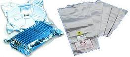
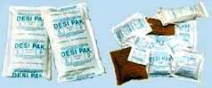
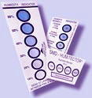

Dry Packing
Dry
packing is the process of putting
moisture-sensitive plastic
surface-mount devices in moisture-resistant bags or moisture
barrier bags (see Fig. 1) to prevent them from absorbing moisture from the
atmosphere. Moisture ingress into plastic packages can result in
popcorn cracking during board mounting. Popcorn cracking refers to
package cracking caused by abrupt vaporization of internal package
moisture.
|
 |
|
Fig. 1.
Examples of moisture barrier bags |
Different
packages have different levels of moisture sensitivity.
The amount of time that the units can spend outside the moisture barrier
bag once it is opened is known as the floor life. Thus, units must
be board mounted before the specified floor life is reached. Units
can not stay indefinitely inside the moisture barrier bag too.
Shelf life
is the amount of time that the units can be kept inside the bag from the
date the bag was sealed. The shelf and floor lives of a lot must be
labeled on the dry pack of the lot.
Prior
to dry packing, units must be
baked
to drive any
internal moisture away. JEDEC J-STD-033 gives the
recommended bake conditions and durations prior to dry packing.
The baked units, which should be in tubes, trays, or a reel, are then put inside the moisture barrier bag
along with, if possible, a
desiccant
(see Fig. 2) for moisture
absorption and a
moisture
indicator card
(see Fig. 3)
which can indicate the highest moisture level that the units have been
exposed to inside the bag. Dry packing is completed by
vacuum-sealing
the bag.

Fig. 2.
Examples of desiccant bags

Fig.
3. Examples of humidity indicator cards
Test Links:
Electrical
Test;
Burn-in;
Marking;
Tape
and Reel;
Boxing
and Labeling
See Also:
MSL Table;
J-STD-033 Bake Tables; IC
Manufacturing
HOME
Copyright
©
2001-2006
www.EESemi.com.
All Rights Reserved.